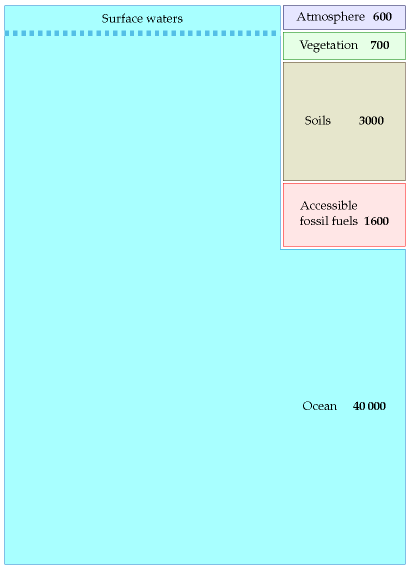
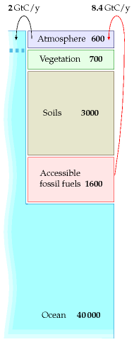
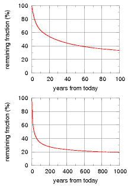
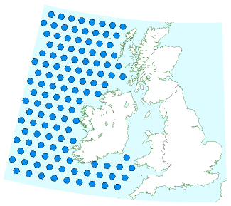

31 The last thing we should talk about
Capturing carbon dioxide from thin air is the last thing we should talk about.
When I say this, I am deliberately expressing a double meaning. First, the energy requirements for carbon capture from thin air are so enormous, it seems almost absurd to talk about it (and there’s the worry that raising the possibility of fixing climate change by this sort of geoengineering might promote inaction today). But second, I do think we should talk about it, contemplate how best to do it, and fund research into how to do it better, because capturing carbon from thin air may turn out to be our last line of defense, if climate change is as bad as the climate scientists say, and if humanity fails to take the cheaper and more sensible options that may still be available today.
Before we discuss capturing carbon from thin air, we need to understand the global carbon picture better.
Understanding CO2
When I first planned this book, my intention was to ignore climate change altogether. In some circles, “Is climate change happening?” was a controversial question. 1 As were “Is it caused by humans?” and “Does it matter?” And, dangling at the end of a chain of controversies, “What should we do about it?” I felt that sustainable energy was a compelling issue by itself, and it was best to avoid controversy. My argument was to be: “Never mind when fossil fuels are going to run out; never mind whether climate change is happening; burning fossil fuels is not sustainable anyway; let’s imagine living sustainably, and figure out how much sustainable energy is available.”
However, climate change has risen into public consciousness, and it raises all sorts of interesting back-of-envelope questions. So I decided to discuss it a little in the preface and in this closing chapter. Not a complete discussion, just a few interesting numbers.

Figure 31.1. The weights of an atom of carbon and a molecule of CO2 are in the ratio 12 to 44, because the carbon atom weighs 12 units and the two oxygen atoms weigh 16 each. 12 + 16 +16 = 44.
Units
Carbon pollution charges are usually measured in dollars or euros per ton of CO2 so I’ll use the ton of CO2 as the main unit when talking about percapita carbon pollution, and the ton of CO2 per year to measure rates of pollution. (The average European’s greenhouse emissions are equivalent to 11 tons per year of CO2; or 30 kg per day of CO2.) But when talking about carbon in fossil fuels, vegetation, soil, and water, I’ll talk about tons of carbon. One ton of CO2 contains 12/44 tons of carbon, a bit more than a quarter of a ton. On a planetary scale, I’ll talk about gigatons of carbon (Gt C). A gigaton of carbon is a billion tons. Gigatons are hard to imagine, but if you want to bring it down to a human scale, imagine burning one ton of coal (which is what you might use to heat a house over a year). Now imagine everyone on the planet burning one ton of coal per year: that’s 6 Gt C per year, because the planet has 6 billion people.
Where is the carbon?
Where is all the carbon? We need to know how much is in the oceans, in the ground, and in vegetation, compared to the atmosphere, if we want to understand the consequences of CO2 emissions. 2

Figure 31.2. Estimated amounts of carbon, in gigatons, in accessible places on the earth. (There’s a load more carbon in rocks too; this carbon moves round on a timescale of millions of years, with a long-term balance between carbon in sediment being subducted at tectonic plate boundaries, and carbon popping out of volcanoes from time to time. For simplicity I ignore this geological carbon.)
Figure 31.2 shows where the carbon is. Most of it – 40 000 Gt – is in the ocean (in the form of dissolved CO2 gas, carbonates, living plant and animal life, and decaying materials). Soils and vegetation together contain about 3700 Gt. Accessible fossil fuels – mainly coal – contain about 1600 Gt. Finally, the atmosphere contains about 600 Gt of carbon.
Until recently, all these pools of carbon were roughly in balance: all flows of carbon out of a pool (say, soils, vegetation, or atmosphere) were balanced by equal flows into that pool. The flows into and out of the fossil fuel pool were both negligible. Then humans started burning fossil fuels. This added two extra unbalanced flows, as shown in figure 31.3.
The rate of fossil fuel burning was roughly 1 Gt C/y in 1920, 2 Gt C/y in 1955, and 8.4 Gt C in 2006. (These figures include a small contribution from cement production, which releases CO2 from limestone.) 3

Figure 31.3. The arrows show two extra carbon flows produced by burning fossil fuels. There is an imbalance between the 8.4 Gt C/y emissions into the atmosphere from burning fossil fuels and the 2 Gt C/y take-up of CO2 by the oceans. This cartoon omits the less-well quantified flows between atmosphere, soil, vegetation, and so forth.
How has this significant extra flow of carbon modified the picture shown in figure 31.2? Well, it’s not exactly known. Figure 31.3 shows the key things that are known. Much of the extra 8.4 Gt C per year that we’re putting into the atmosphere stays in the atmosphere, raising the atmospheric concentration of carbon-dioxide. The atmosphere equilibrates fairly rapidly with the surface waters of the oceans (this equilibration takes only five or ten years), and there is a net flow of CO2 from the atmosphere into the surface waters of the oceans, amounting to 2 Gt C per year. (Recent research indicates this rate of carbon-uptake by the oceans may be reducing, however.) 4 This unbalanced flow into the surface waters causes ocean acidification, which is bad news for coral. Some extra carbon is moving into vegetation and soil too, perhaps about 1.5 Gt C per year, but these flows are less well measured. Because roughly half of the carbon emissions are staying in the atmosphere, 5 continued carbon pollution at a rate of 8.4 Gt C per year will continue to increase CO2 levels in the atmosphere, and in the surface waters.
What is the long-term destination of the extra CO2? Well, since the amount in fossil fuels is so much smaller than the total in the oceans, “in the long term” the extra carbon will make its way into the ocean, and the amounts of carbon in the atmosphere, vegetation, and soil will return to normal. However, “the long term” means thousands of years. Equilibration between atmosphere and the surface waters is rapid, as I said, but figures 31.2 and 31.3 show a dashed line separating the surface waters of the ocean from the rest of the ocean. On a time-scale of 50 years, this boundary is virtually a solid wall. Radioactive carbon dispersed across the globe by the atomic bomb tests of the 1960s and 70s has penetrated the oceans to a depth of only about 400 m. 6 In contrast the average depth of the oceans is about 4000 m.
The oceans circulate slowly: a chunk of deep-ocean water takes about 1000 years to roll up to the surface and down again. The circulation of the deep waters is driven by a combination of temperature gradients and salinity gradients, so it’s called the thermohaline circulation (in contrast to the circulations of the surface waters, which are wind-driven).
This slow turn-over of the oceans has a crucial consequence: we have enough fossil fuels to seriously influence the climate over the next 1000 years.
Where is the carbon going
Figure 31.3 is a gross simplification. For example, humans are causing additional flows not shown on this diagram: the burning of peat and forests in Borneo in 1997 alone released about 0.7 Gt C. Accidentally-started fires in coal seams release about 0.25 Gt C per year.
Nevertheless, this cartoon helps us understand roughly what will happen in the short term and the medium term under various policies. First, if carbon pollution follows a “business as usual” trajectory, burning another 500 Gt of carbon over the next 50 years, we can expect the carbon to continue to trickle gradually into the surface waters of the ocean at a rate of 2 Gt C per year. By 2055, at least 100 Gt of the 500 would have gone into the surface waters, and CO2 concentrations in the atmosphere would be roughly double their pre-industrial levels.

Figure 31.4. Decay of a small pulse of CO2 added to today’s atmosphere, according to the Bern model of the carbon cycle. Source: Hansen et al. (2007).
If fossil-fuel burning were reduced to zero in the 2050s, the 2 Gt flow from atmosphere to ocean would also reduce significantly. (I used to imagine that this flow into the ocean would persist for decades, but that would be true only if the surface waters were out of equilibrium with the atmosphere; but, as I mentioned earlier, the surface waters and the atmosphere reach equilibrium within just a few years.) Much of the 500 Gt we put into the atmosphere would only gradually drift into the oceans over the next few thousand years, as the surface waters roll down and are replaced by new water from the deep.
Thus our perturbation of the carbon concentration might eventually be righted, but only after thousands of years. And that’s assuming that this large perturbation of the atmosphere doesn’t drastically alter the ecosystem. It’s conceivable, for example, that the acidification of the surface waters of the ocean might cause a sufficient extinction of ocean plant-life that a new vicious cycle kicks in: acidification means extinguished plant-life, means plant-life absorbs less CO2 from the ocean, means oceans become even more acidic. Such vicious cycles (which scientists call “positive feedbacks” or “runaway feedbacks”) have happened on earth before: it’s believed, for example, that ice ages ended relatively rapidly because of positive feedback cycles in which rising temperatures caused surface snow and ice to melt, which reduced the ground’s reflection of sunlight, which meant the ground absorbed more heat, which led to increased temperatures. (Melted snow – water – is much darker than frozen snow.) Another positive feedback possibility to worry about involves methane hydrates, which are frozen in gigaton quantities in places like Arctic Siberia, and in 100-gigaton quantities on continental shelves. Global warming greater than 1 °C would possibly melt methane hydrates, 7 which release methane into the atmosphere, and methane increases global warming more strongly than CO2 does.
This isn’t the place to discuss the uncertainties of climate change in any more detail. I highly recommend the books Avoiding Dangerous Climate Change (Schellnhuber et al., 2006) and Global Climate Change (Dessler and Parson, 2006). Also the papers by Hansen et al. (2007) and Charney et al. (1979).
The purpose of this chapter is to discuss the idea of fixing climate change by sucking carbon dioxide from thin air; we discuss the energy cost of this sucking next.
The cost of sucking
Today, pumping carbon out of the ground is big bucks. In the future, perhaps pumping carbon into the ground is going to be big bucks. Assuming that inadequate action is taken now to halt global carbon pollution, perhaps a coalition of the willing will in a few decades pay to create a giant vacuum cleaner, and clean up everyone’s mess.
Before we go into details of how to capture carbon from thin air, let’s discuss the unavoidable energy cost of carbon capture. Whatever technologies we use, they have to respect the laws of physics, and unfortunately grabbing CO2 from thin air and concentrating it requires energy. The laws of physics say that the energy required must be at least 0.2 kWh per kg of CO2 (table 31.5). Given that real processes are typically 35% efficient at best, I’d be amazed if the energy cost of carbon capture is ever reduced below 0.55 kWh per kg.
Now, let’s assume that we wish to neutralize a typical European’s CO2 output of 11 tons per year, which is 30 kg per day per person. The energy required, assuming a cost of 0.55 kWh per kg of CO2, is 16.5 kWh per day per person. This is exactly the same as British electricity consumption. So powering the giant vacuum cleaner may require us to double our electricity production – or at least, to somehow obtain extra power equal to our current electricity production.
If the cost of running giant vacuum cleaners can be brought down, brilliant, let’s make them. But no amount of research and development can get round the laws of physics, which say that grabbing CO2 from thin air and concentrating it into liquid CO2 requires at least 0.2 kWh per kg of CO2.
Now, what’s the best way to suck CO2 from thin air? I’ll discuss four technologies for building the giant vacuum cleaner:
- chemical pumps;
- trees;
- accelerated weathering of rocks;
- ocean nourishment.
A. Chemical technologies for carbon capture
The chemical technologies typically deal with carbon dioxide in two steps.
\[ \text{0.03\%~}\text{CO}_{\text{2}}\overset{\text{concentrate}}{\longrightarrow}\text{Pure~}\text{CO}_{\text{2}}\overset{\text{compress}}{\longrightarrow}\text{Liquid~}\text{CO}_{\text{2}} \]
First, they concentrate CO2 from its low concentration in the atmosphere; then they compress it into a small volume ready for shoving somewhere (either down a hole in the ground or deep in the ocean). 8 Each of these steps has an energy cost. The costs required by the laws of physics are shown in table 31.5.
| cost (kWh/kg) | |
|---|---|
| concentrate | 0.13 |
| compress | 0.07 |
| total | 0.20 |
Table 31.5. The inescapable energy-cost of concentrating and compressing CO2 from thin air. 9
In 2005, the best published methods for CO2 capture from thin air were quite inefficient: the energy cost was about 3.3 kWh per kg, with a financial cost of about $140 per ton of CO2. 10 At this energy cost, capturing a European’s 30 kg per day would cost 100 kWh per day – almost the same as the European’s energy consumption of 125 kWh per day. Can better vacuum cleaners be designed?
Recently, Wallace Broecker, climate scientist, 11 “perhaps the world’s foremost interpreter of the Earth’s operation as a biological, chemical, and physical system,” has been promoting an as yet unpublished technology developed by physicist Klaus Lackner for capturing CO2 from thin air. Broecker imagines that the world could carry on burning fossil fuels at much the same rate as it does now, and 60 million CO2-scrubbers (each the size of an up-ended shipping container) will vacuum up the CO2. What energy does Lackner’s process require? In June 2007 Lackner told me that his lab was achieving 1.3 kWh per kg, but since then they have developed a new process based on a resin that absorbs CO2 when dry and releases CO2 when moist. Lackner told me in June 2008 that, in a dry climate, the concentration cost has been reduced to about 0.18–0.37 kWh of low-grade heat per kg CO2. The compression cost is 0.11 kWh per kg. Thus Lackner’s total cost is 0.48 kWh or less per kg. For a European’s emissions of 30 kg CO2 per day, we are still talking about a cost of 14 kWh per day, of which 3.3 kWh per day would be electricity, and the rest heat.
Hurray for technical progress! But please don’t think that this is a small cost. We would require roughly a 20% increase in world energy production, just to run the vacuum cleaners.
B. What about trees?
1 hectare = 10 000 m2
Trees are carbon-capturing systems; they suck CO2 out of thin air, and they don’t violate any laws of physics. They are two-in-one machines: they are carbon-capture facilities powered by built-in solar power stations. They capture carbon using energy obtained from sunlight. The fossil fuels that we burn were originally created by this process. So, the suggestion is, how about trying to do the opposite of fossil fuel burning? How about creating wood and burying it in a hole in the ground, while, next door, humanity continues digging up fossil wood and setting fire to it? It’s daft to imagine creating buried wood at the same time as digging up buried wood. Even so, let’s work out the land area required to solve the climate problem with trees.
The best plants in Europe capture carbon at a rate of roughly 10 tons of dry wood per hectare per year 12 – equivalent to about 15 tons of CO2 per hectare per year – so to fix a European’s output of 11 tons of CO2 per year we need 7500 square metres of forest per person. This required area of 7500 square metres per person is twice the area of Britain per person. And then you’d have to find somewhere to permanently store 7.5 tons of wood per person per year! At a density of 500 kg per m3, each person’s wood would occupy 15 m3 per year. A lifetime’s wood – which, remember, must be safely stored away and never burned – would occupy 1000 m3. That’s five times the entire volume of a typical house. If anyone proposes using trees to undo climate change, they need to realise that country-sized facilities are required. I don’t see how it could ever work.
What the IPCC says trees can do, and what they have done
MacKay’s section B is a hectare and a growth rate. The intervening years produced an assessment of the same question at world scale, and it is worth setting the two numbers it gives side by side, because they are not close.
The potential is large and cheap. The IPCC’s Sixth Assessment puts the economic mitigation potential of agriculture, forestry and other land use — everything available at under $100 (£79) a tonne — at 8 to 14 GtCO2-equivalent a year between 2020 and 2050, about half the technical potential, with 30 to 50% of it obtainable under $20 a tonne. Forests and other natural ecosystems are the largest share of that, at 7.3 (3.9–13.1) GtCO2-eq a year for protection, improved management and restoration together. Afforestation and reforestation alone have a technical potential near 3.9 (0.5–10.1) GtCO2 a year by 2050. Altogether the sector could supply 20 to 30% of the mitigation needed for a 1.5 or 2 °C pathway.
The delivery is 1.4%. Over 2010–2019, past policies actually delivered about 0.65 GtCO2 a year, which the report gives as 1.4% of global gross emissions, and more than 80% of that came from forestry measures. Realised mitigation is therefore something like five to eight per cent of the economic potential. On money, roughly $0.7 billion a year has been spent against more than $400 billion a year estimated as necessary — a factor of about 570.13
And the obstacles the IPCC lists are not physical ones. Its own summary names “lack of institutional support, uncertainty over long-term additionality and trade-offs, weak governance, fragmented land ownership, and uncertain permanence effects”, and says that robust measurement and verification is “paramount … to prevent misleading assumptions or claims on mitigation” — which is the phantom-credit problem described later in this chapter, stated by the assessment before that investigation appeared. The report is also explicit that the sector “cannot compensate for delayed emission reductions in other sectors.”
Sweden, where the sink is real and is not a constant
One country makes the shape of this concrete. On the 2024 figures, Sweden’s land sector removes more carbon dioxide than the whole country emits. Chapter L gives them: 47 Mt emitted against 54 Mt absorbed, a net −7 Mt — the only balance in the European Union that is negative — which over 10.6 million people is about −0.7 tonnes per person, against the −0.6 the European Environment Agency reports on its own slightly different vintage of the same inventory. Sweden also has the legal apparatus that makes it work — an obligation on the landowner to replant after felling, which is why heavy commercial harvesting has not become deforestation.
Three things stop this being the encouraging story it first looks like.
The removal was 31 Mt in 2023 and about 54 Mt in 2024. That is a swing of twenty-three megatonnes in a single year, very nearly half of Sweden’s entire gross emissions — so whether the country is net negative depends on which year is quoted, and on the 2023 removal it was not. The trend underneath is downward: since 2012 tree growth has slowed while harvest and natural degradation have risen, and the EEA’s assessment is that Sweden will have difficulty reaching its 2030 target for the sector. And inside that net sink sits a gross emission of nearly 13 Mt a year from drained organic soils, which is a third of what the whole country emits from energy.14
A claim often made alongside this one needs more care than it usually gets. Sweden and Finland burn very little forest — a fraction of a per cent of their forest area over 2001–2023 — while Canada and Russia burn eight or nine per cent, and the Nordic forests are mostly privately owned while the Canadian and Russian ones are mostly public. The inference drawn is that commercial forestry prevents fire.
The mechanism is plausible, but the evidence for it is much weaker than the comparison suggests. A managed forest has a dense road network built to get timber out, it is fragmented by clear-cuts that break fuel continuity, and every hectare has an owner with a reason to notice smoke. Those plausibly reduce burned area, and Sweden does suppress nearly every ignition. But the comparison is dominated by something else entirely: 92% of Canada’s burned area is lightning-ignited, mostly in country too remote to defend; fires deliberately left to burn under a “modified response” were 8% of fires but 60% of the area burned; and only about a fifth of Canada’s burned area over the past forty years was inside forest that has ever been actively managed at all. Public ownership in Canada and Russia is a consequence of remoteness rather than a cause of burning, and a boreal forest with a natural fire-return interval measured in decades is not failing when it burns.
So the honest reading is that management probably helps, that nobody has separated its effect from climate and from a deliberate decision not to fight remote fires, and that a chart of a handful of countries falling into two geographic clusters cannot do that separation.15
None of that makes the sink fictitious. It makes it a flow rather than a stock — a rate of uptake that depends on how fast trees are growing this decade, which is exactly the property the IPCC means by impermanence, and exactly the property a tonne emitted from a chimney does not have.
C. Enhanced weathering of rocks
Is there a sneaky way to avoid the significant energy cost of the chemical approach to carbon-sucking? Here is an interesting idea: pulverize rocks that are capable of absorbing CO2, and leave them in the open air. 16 This idea can be pitched as the acceleration of a natural geological process. Let me explain.
Two flows of carbon that I omitted from figure 31.3 are the flow of carbon from rocks into oceans, associated with the natural weathering of rocks, and the natural precipitation of carbon into marine sediments, which eventually turn back into rocks. These flows are relatively small, involving about 0.2 Gt C per year (0.7 Gt CO2 per year). So they are dwarfed by current human carbon emissions, which are about 40 times bigger. But the suggestion of enhanced-weathering advocates is that we could fix climate change by speeding up the rate at which rocks are broken down and absorb CO2. The appropriate rocks to break down include olivines or magnesium silicate minerals, which are widespread. The idea would be to find mines in places surrounded by many square kilometres of land on which crushed rocks could be spread, or perhaps to spread the crushed rocks directly on the oceans. Either way, the rocks would absorb CO2 and turn into carbonates and the resulting carbonates would end up being washed into the oceans. To pulverize the rocks into appropriately small grains for the reaction with CO2 to take place requires only 0.04 kWh per kg of sucked CO2. Hang on, isn’t that smaller than the 0.20 kWh per kg required by the laws of physics? Yes, but nothing is wrong: the rocks themselves are the sources of the missing energy. Silicates have higher energy than carbonates, so the rocks pay the energy cost of sucking the CO2 from thin air.
I like the small energy cost of this scheme but the difficult question is, who would like to volunteer to cover their country with pulverized rock?
D. Ocean nourishment
One problem with chemical methods, tree-growing methods, and rock-pulverizing methods for sucking CO2 from thin air is that all would require a lot of work, and no-one has any incentive to do it – unless an international agreement pays for the cost of carbon capture. At the moment, carbon prices are too low.
A final idea for carbon sucking might sidestep this difficulty. The idea is to persuade the ocean to capture carbon a little faster than normal as a by-product of fish farming. 17
Some regions of the world have food shortages. There are fish shortages in many areas, because of over-fishing during the last 50 years. The idea of ocean nourishment is to fertilize the oceans, supporting the base of the food chain, enabling the oceans to support more plant life and more fish, and incidentally to fix more carbon. Led by Australian scientist Ian Jones, the ocean nourishment engineers would like to pump a nitrogencontaining fertilizer such as urea into appropriate fish-poor parts of the ocean. They claim that 900 km2 of ocean can be nourished to take up about 5 Mt CO2/y. Jones and his colleagues reckon that the ocean nourishment process is suitable for any areas of the ocean deficient in nitrogen. That includes most of the North Atlantic. Let’s put this idea on a map. UK carbon emissions are about 600 Mt CO2/y. So complete neutralization of UK carbon emissions would require 120 such areas in the ocean. The map in figure 31.6 shows these areas to scale alongside the British Isles. As usual, a plan that actually adds up requires country-sized facilities! And we haven’t touched on how we would make all the required urea.

Figure 31.6. 120 areas in the Atlantic Ocean, each 900 km2 in size. These make up the estimated area required in order to fix Britain’s carbon emissions by ocean nourishment.
While it’s an untested idea, and currently illegal, I do find ocean nourishment interesting because, in contrast to geological carbon storage, it’s a technology that might be implemented even if the international community doesn’t agree on a high value for cleaning up carbon pollution; fishermen might nourish the oceans purely in order to catch more fish.
Commentators can be predicted to oppose manipulations of the ocean, focusing on the uncertainties rather than on the potential benefits. They will be playing to the public’s fear of the unknown. People are ready to passively accept an escalation of an established practice (e.g., dumping CO2 in the atmosphere) while being wary of innovations that might improve their future well being. They have an uneven aversion to risk.
Ian Jones
We, humanity, cannot release to the atmosphere all, or even most, fossil fuel CO2. To do so would guarantee dramatic climate change, yielding a different planet…
J. Hansen et al (2007)
Avoiding dangerous climate change” is impossible – dangerous climate change is already here. The question is, can we avoid catastrophic climate change?
David King, UK Chief Scientist, 2007
The whale, which is ocean nourishment with a face
A section added in the 2026 revision. MacKay’s section D is fertilizing the ocean to grow plankton. The version that has had the attention since is the same idea delivered by an animal, and it is worth working through because it is a clean example of what this book’s method is for.
In 2019 four economists writing in the IMF’s Finance & Development proposed protecting whales as a climate strategy, opening with the line “one whale is worth thousands of trees”. They valued the average great whale at more than $2 million (£1.6 million) and the living stock at over $1 trillion, and estimated that whales restored to their pre-whaling numbers would capture 1.7 billion tonnes of CO2 a year — for which, they calculated, it would be worth paying about $13 a person annually. The framing was explicit: an alternative to capturing carbon from the air, which they called complex, untested and expensive.18
Separate the two things being counted, because almost everything depends on which one you mean.
The first is the carbon in the whale itself. A great whale sinking to the sea floor takes about 33 tonnes of CO2 down with it, which over a lifespan near eighty years is 0.4 tonnes a year. Multiply by the 1.3 million great whales alive now and the whole world’s whale-fall carbon is half a million tonnes of CO2 a year. Against the 35 800 Mt of energy-related CO2 this chapter uses elsewhere that is 0.0015%. Restore every whale killed since whaling began and it reaches 0.006%. As a way of storing carbon in bodies, whales are a rounding error — and this is the number the “worth thousands of trees” comparison is built on.
The second is the fertilizing. Whales bring iron and nitrogen to the surface where phytoplankton can use them, and phytoplankton is where the carbon actually goes. This is real and has been measured: the best-documented case, sperm whales in the Southern Ocean, found about 12 000 animals releasing some 50 tonnes of iron a year, exporting 4 × 105 tonnes of carbon to the deep while respiring 2 × 105, for a net 200 000 tonnes of carbon — about 0.73 million tonnes of CO2. That is 61 tonnes of CO2 per whale per year, about 150 times what the body carries.19
So the fertilizing is the whole of the argument, and the whale is the delivery mechanism. At 61 tonnes against 0.41, the body accounts for 0.7% of the measured effect. Which means about 99% of the benefit rests on the part that is hardest to measure, and almost none of it on the part that is easy.
Now scale the measured case. Sixty-one tonnes per whale-year across 1.3 million whales is 0.08 Gt of CO2 a year, about 0.2% of that same 35 800 Mt; across a restored 5 million it is 0.31 Gt, or 0.8%. Those are not trivial numbers. But the IMF figure is 1.7 Gt — more than five times what the one well-quantified study gives when scaled up, and that scaling is already generous, because the Southern Ocean is iron-limited in a way most of the ocean is not. Adding iron where iron is not the limiting nutrient does not produce plankton.
None of which is an argument against whales, and it is worth being clear about that. They are worth protecting for reasons that have nothing to do with carbon, and the fertilizing effect is real. The argument is about what the number is for. A trillion-dollar valuation, offered as an alternative to the machines in this chapter, is doing work that the evidence underneath it cannot support — and the part of it that a reader can check independently, the carbon in the animal, turns out to be four orders of magnitude too small to matter.
And the argument has now completed a circle worth noticing. If the carbon comes from the fertilizing rather than from the animal, then the animal is not required. Groups have begun manufacturing the input directly — artificial whale faeces, a nutrient mixture released to feed phytoplankton — with one such effort, the WhaleX Foundation, shortlisted among sixty entries from over eleven hundred in the XPRIZE carbon-removal competition. Strip away the whale and what remains is precisely MacKay’s section D: fertilize the ocean, grow plankton, hope the carbon sinks. Eighteen years on it is still a proposal without a published carbon figure attached to it — WhaleX’s own site gives none — and still constrained by the same treaties that made MacKay call it illegal in 2008.20
That is the same failure this chapter describes twice more below, in a more sympathetic costume. MacKay’s worry about section A was that raising the possibility of a fix promotes inaction now. A whale is a more appealing promise than a fan in the desert, and it fails the arithmetic by a wider margin.
The last thing, eighteen years on
A section added in the 2026 revision. MacKay’s title carries a double meaning — last in order of priority, and last as in a final resort — and he says so. Both readings have got stronger, and none of the eighteen years since has been kind to the technology.
The energy cost turned out worse than he assumed, not better
He works with a figure of 0.55 kWh per kilogram of carbon dioxide, roughly three times the thermodynamic floor of 0.2 that he derives, and observes that it “seems almost absurd” to talk about doing this at all. Real machines have now been built and measured:
| kWh per kg of CO2 | |
|---|---|
| Thermodynamic minimum, as MacKay derives it | 0.2 |
| MacKay’s working assumption | 0.55 |
| Machines actually operating, 2025 | 1.5 to 2.5 |
So the real thing is three to five times worse than the assumption he already thought close to absurd, and eight to twelve times the physical limit. The fans alone, before any chemistry, account for 300 to 900 kWh a tonne.21
Redo his sentence with a real number. Neutralising a European’s 30 kg a day at 2 kWh per kilogram takes 60 kWh per day per person. MacKay’s own version reads: “16.5 kWh per day per person. This is exactly the same as British electricity consumption.” Britain now generates 11.2 kWh(e) per day per person. Sucking one European’s emissions out of the air would take more than five times Britain’s entire electricity generation per head — where in 2008 the two numbers were equal.
The gap widened from both ends: the machines are dearer in energy than he assumed, and the generation he compared them against has shrunk.
It has been built at a scale of about nine seconds
Twenty-seven direct air capture plants had been commissioned worldwide by the International Energy Agency’s last full count, with a combined operating capacity a little over 10 000 tonnes a year. Mammoth’s 36 000-tonne nameplate is not in that total and would dominate it if the plant performed; the paragraph below records what it actually captured. World energy-related emissions are about 35 800 million tonnes a year, which is 1135 tonnes every second.
The entire operating capacity in that count, running perfectly for a full year, offsets about nine seconds of world emissions.
The flagship is worse than that headline suggests. Climeworks’ Mammoth, in Iceland, is the largest such plant ever built, with a nameplate of 36 000 tonnes a year. In 2024 it captured 105 tonnes — about three-tenths of one per cent of design capacity. The company’s own co-chief executive put operating cost “closer to the $1000 per ton mark than the $100 per ton mark” — nearer £790 a tonne than £79, and the firm cut staff in 2025.22
The next machine is larger. STRATOS, in Texas, is designed for 500 000 tonnes a year, which would multiply that operating count roughly fiftyfold. At full output it would offset about seven minutes of world emissions annually.
The subsidy does not close the gap either
Chapter 23 records the American 45Q credit paying $180 (£142) a tonne for direct air capture — the most generous instrument for this anywhere in the world. Against an operating cost near $1000, it covers under a fifth. There is no jurisdiction in which building one of these machines is a commercial proposition, and none in prospect.
And emitting is free almost everywhere
The subsidy is only half the accounting. The other half is what it costs to put the carbon there in the first place, and the answer is usually nothing.
About 30% of the world’s carbon dioxide emissions carry a price of any kind. That is up from roughly 7% in 2010, most of the rise coming from China’s emissions trading system, which covers around 15% of global emissions on its own — though only about half of China’s own emissions, mostly the electricity sector. The corresponding statement is the one worth writing down: about 70% of the world’s emissions have no carbon price at all.
And where there is a price, it is mostly a small one. Most priced emissions are valued at $10 (£8) a tonne or below. Western European prices of $65 to $90 (£51 to £71) apply to about 5% of global emissions. Under 0.5% of all emissions face a price above $100 (£79) a tonne.23
Now set that against this chapter’s own figure of about $1000 (£790) a tonne to run a direct air capture plant, and against a number the chapter has not yet used. Estimates of the social cost of carbon — the damage a tonne actually does — cluster above $100 (£79) a tonne; a meta-analysis of 147 studies gives a median of $103 and a 2024 analysis $132.
So there are three numbers and they are each roughly an order of magnitude apart. Emitting a tonne typically costs nothing, or a few dollars. The damage it does is worth about a hundred. Undoing it costs about a thousand. No subsidy of the kind chapter 23 describes closes a gap of that shape, because the gap is not between the machine’s cost and its revenue. It is between the cost of un-emitting and the cost of emitting, and the second of those is zero for seven-tenths of the world’s carbon.
This is the sharpest form of the argument for a carbon price, and it is not the obvious one. It also bears on chapter 29, which finds that Europe’s price did useful work at the margin but called almost no carbon capture into existence, and concludes that MacKay’s ordering of price above regulation should be reversed. The arithmetic here explains only half of that. Direct air capture was never among the things any carbon price could have bought, at the $1000 a tonne this chapter records. But chapter 29’s puzzle is the cheaper case — capture on a flue, where chapter 23 records a subsidy that now exceeds the cost at the best sites. That one was within reach of prices that existed, and it still was not built, which is precisely why chapter 29 reaches for regulation rather than for a higher price. A price high enough to make direct air capture pay would have to be around $1000 a tonne — ten times the damage the tonne does, and a hundred times what most priced emissions currently pay. Long before it reached that level it would have made every cheaper abatement in this book pay, most of them many times over: the insulation of chapter 21, the heat pumps of chapter 7, the wind of chapter 4. The case for pricing carbon is not that it would finance this chapter’s machines. It is that this chapter’s machines are the very last thing it would finance — which is, once again, MacKay’s own ordering, arrived at from the other end.
And the cheap alternative he treats gently turned out to be largely fictitious
Section B of this chapter is trees, and MacKay is even-handed about them. What has happened since is that the voluntary offset market — the mechanism through which almost all tree-based carbon removal was actually financed — lost its credibility. A 2023 investigation concluded that more than 90% of the rainforest credits certified by the largest standards body were likely to be “phantom credits” representing no real reduction. The certifier disputed the methodology, and the dispute is not settled; the market repriced regardless, and several large buyers withdrew.24
So the position is worse than in 2008 in both directions: the machine is dearer than assumed, and the natural alternative it was supposed to compete with turned out to have been partly imaginary.
A note on the arguments this book does not have
MacKay’s opening move is to grant the science and argue about quantities. He states it plainly — the book is about numbers, not adjectives — and every chapter since has taken warming as given and asked instead how many kilowatt-hours, over how much area, at what cost. That is a deliberate narrowing, and it is worth saying once what it leaves out.
There is a large and well-catalogued body of argument that climate change is not happening, is not caused by people, or does not matter. This book does not engage it, and a reader looking for that engagement should go elsewhere: the Skeptical Science catalogue lists 252 claims with a sourced response to each, ordered by how often they are actually made — “climate’s changed before”, “it’s the sun”, “there is no consensus”, “the models are unreliable”, “the temperature record is unreliable”.25
Forty-six of those 252 are not climate science at all. They are claims about energy and economics — that renewables are too expensive, that they cannot provide baseload, that electric cars are worse once the battery is counted, that turbines take up too much land, that panels do not work in cloudy places. Those are this book’s territory, and this edition answers several of them where they arise, in chapters 4, 6, 20 and 26, using the arithmetic of the chapter rather than an appeal to authority.
That division is the useful one. A claim about whether the greenhouse effect exists cannot be settled by an energy calculation, and a claim about whether wind farms take too much land cannot be settled by a consensus. Mixing the two does a disservice to both, and it is why this chapter, which is about the last thing we should talk about, is also the right place to say what this book has not been talking about at all.
Which makes the title more right than he meant it
MacKay’s reasons for putting this last were the energy cost, and the worry that “raising the possibility of fixing climate change by this sort of geoengineering might promote inaction now.” Both have been vindicated in the only way that counts: the energy cost is larger than he assumed, and the possibility has been used exactly as he feared.
But there is a sharper version of the argument that he does not make, and this edition would add it. Carbon dioxide is about 0.04% of the atmosphere and roughly 10% of a power station’s flue gas — a concentration ratio of some two hundred and fifty to one, and that ratio is the whole difficulty. Chapter 23 records what happened to capture at the easy end: 0.14% of world emissions actually operating, after thirty years of expectation and with a subsidy that now exceeds the cost at the best sites.
If capture from a flue at 10% concentration is built at one part in seven hundred, capture from open air at a two-hundred-and-fiftieth of that concentration is not a policy option. It is a research programme. The useful question is not how to make direct air capture cheap. It is why the far easier version was not built when it could have been — and chapters 23 and 29 answer that, and the answer is not physics.
Notes
climate change… was a controversial question. Indeed there still is a “yawning gap between mainstream opinion on climate change among the educated elites of Europe and America” [voxbz].↩︎
Where is the carbon? Sources: Schellnhuber et al. (2006), Davidson and Janssens (2006).↩︎
The rate of fossil fuel burning… Source: Marland et al. (2007).↩︎
Recent research indicates carbon-uptake by the oceans may be reducing. www.timesonline.co.uk/tol/news/uk/science/ article1805870.ece, www.sciencemag.org/cgi/content/abstract/1136188, [yofchc], Le Quéré et al. (2007).↩︎
roughly half of the carbon emissions are staying in the atmosphere. It takes 2.1 billion tons of carbon in the atmosphere (7.5 Gt CO2) to raise the atmospheric CO2 concentration by one part per million (1 ppm). If all the CO2 we pumped into the atmosphere stayed there, the concentration would be rising by more than 3 ppm per year – but it is actually rising at only 1.5 ppm per year.↩︎
Radioactive carbon… has penetrated to a depth of only about 400 m. The mean value of the penetration depth of bomb 14C for all observational sites during the late 1970s is 390±39 m (Broecker et al., 1995). From [3e28ed].↩︎
Global warming greater than 1 °C would possibly melt methane hydrates. Source: Hansen et al. (2007, p1942).↩︎
Shoving the CO2 down a hole in the ground or deep in the ocean. See Williams (2000) for discussion. “For a large fraction of injected CO2 to remain in the ocean, injection must be at great depths. A consensus is developing that the best near-term strategy would be to discharge CO2 at depths of 1000–1500 metres, which can be done with existing technology.” See also the Special Report by the IPCC: www.ipcc.ch/ipccreports/srccs.htm.↩︎
Table 31.5. Inescapable cost of concentrating and compressing CO2 from thin air. The unavoidable energy requirement to concentrate CO2 from 0.03% to 100% at atmospheric pressure is kT ln 100/0.03 per molecule, which is 0.13 kWh per kg. The ideal energy cost of compression of CO2 to 110 bar (a pressure mentioned for geological storage) is 0.067 kWh/kg. So the total ideal cost of CO2 capture and compression is 0.2 kWh/kg. According to the IPCC special report on carbon capture and storage, the practical cost of the second step, compression of CO2 to 110 bar, is 0.11 kWh per kg. (0.4 GJ per t CO2; 18 kJ per mole CO2; 7 kT per molecule.)↩︎
In 2005, the best methods for carbon capture were quite inefficient: the energy cost was about 3.3 kWh per kg, with a financial cost of about $140 per ton of CO2. Sources: Keith et al. (2005), Lackner et al. (2001), Herzog (2003), Herzog (2001), David and Herzog (2000).↩︎
Wallace Broecker, climate scientist. . . www.af-info.or.jp/eng/honor/hot/enrbro.html. His book promoting artificial trees: Broecker and Kunzig (2008).↩︎
The best plants in Europe capture carbon at a rate of roughly 10 tons of dry wood per hectare per year. Source: Select Committee on Science and Technology.↩︎
IPCC, Climate Change 2022: Mitigation of Climate Change, Working Group III contribution to the Sixth Assessment Report, chapter 7 (Agriculture, Forestry and Other Land Uses), Executive Summary. The figures are the chapter’s: economic potential under USD100 tCO2-eq of 8 to 14 GtCO2-eq per year for 2020–2050, described as a likely range whose bottom is the mean of integrated assessment models and whose top is the mean of global sectoral studies; forests and other ecosystems at 7.3 (3.9–13.1) against agriculture at 4.1 (1.7–6.7) and demand-side measures at 2.2 (1.1–3.6); delivery of about 0.65 GtCO2 per year over 2010–2019, being 1.4% of global gross emissions, with over 80% from forestry; and USD0.7 billion a year spent against more than USD400 billion a year judged necessary. The afforestation and reforestation technical potential of 3.9 (0.5–10.1) GtCO2 per year by 2050 is given at medium confidence. Two cautions on comparing the two headline numbers. Potential and delivery are not measured the same way — the 8–14 Gt is a modelled potential across all AFOLU measures including agricultural and demand-side ones, while the 0.65 Gt is an estimate of what policies achieved, so the ratio in the text is indicative of the gap rather than a precise efficiency. And the sector’s own accounting is contested: the chapter notes that book-keeping models and national inventories disagree about AFOLU CO2 fluxes, giving a net source of +5.9 ± 4.1 GtCO2 per year on one basis and 0.0 to +0.8 on the other, a discrepancy larger than most of the mitigation being discussed. Sterling conversion at the chapter I rate.↩︎
Swedish figures are from the European Environment Agency’s country assessment and Naturvårdsverket’s inventory reporting: gross greenhouse gas emissions excluding land use of 47 Mt CO2-eq in 2024, which is the figure chapter L uses and the one consistent with the per-person net reported by the EEA; land-sector net removal averaging about 55 Mt over 1990–2023, falling to 31 Mt in 2023 and estimated near 54 Mt in 2024; net emissions including land use reported at −0.6 tonnes per person for 2024; nearly 13 Mt a year of emissions from drained organic soils; and the EEA’s judgement that Sweden will have difficulty meeting its 2030 land-sector target, with slower tree growth and higher harvest and natural degradation since 2012 given as the reasons. The year-to-year swing deserves its own caution. A twenty-three-megatonne movement in a national sink between consecutive years is partly real — growth, harvest and disturbance do vary — and partly a product of how the inventory is estimated and revised, since these are modelled rather than measured quantities and back-revisions are routine. That is a reason to treat any single year’s net figure, including the negative one, as a weak statement about the country rather than a strong one.↩︎
Burned-area shares are as commonly plotted from Global Forest Watch data for 2001–2023 against public-ownership shares; the Canadian fire figures are from the Canadian wildland fire literature — lightning accounting for about 92% of area burned, modified-response fires being roughly 8% of fires but 60% of burned area in the year usually cited, and around a fifth of burned area over four decades falling within forest that has ever been under active management. This note exists because the comparison is easy to over-read. A handful of countries in two clusters, Nordic and North American–Russian, cannot separate ownership from climate, from fire-return interval, from road density, or from a deliberate policy of not suppressing fires that threaten nothing. Sweden’s own 2018 season, which burned an unusually large area and exhausted the country’s suppression capacity, is the reminder that the Nordic figure is a record of conditions and effort rather than a property of ownership. The claim this edition is willing to make is the mechanical one: access, fragmentation and an owner on the ground reduce burned area, by an amount nobody has isolated.↩︎
Enhanced weathering of rocks. See Schuiling and Krijgsman (2006).↩︎
Ocean nourishment. See Judd et al. (2008). See also Chisholm et al. (2001). The risks of ocean nourishment are discussed in Jones (2008).↩︎
Ralph Chami, Thomas Cosimano, Connel Fullenkamp and Sena Oztosun, “Nature’s Solution to Climate Change”, Finance & Development (International Monetary Fund), December 2019. The figures quoted are theirs: 33 tonnes of CO2 sequestered by an average great whale, more than $2 million for the average whale and over $1 trillion for the current stock, 1.3 million great whales today against a pre-whaling 4 to 5 million, 1.7 billion tonnes of CO2 a year if the population recovered, and $13 per person a year to pay for it. Sterling conversion at the mid-2026 rate in chapter I. Note what the $2 million values. It is a discounted stream of the whale’s carbon services plus its contribution to ecotourism, not a market price, and it is presented by the authors as a conservative estimate; the trillion-dollar total is that figure multiplied by the stock. The authors are economists at the IMF writing in a magazine rather than a peer-reviewed journal, and the piece is explicitly advocacy for a financing mechanism modelled on REDD.↩︎
The whale-fall arithmetic is this book’s, from the 33-tonne figure: an eighty-year lifespan gives 0.41 t CO2 per whale-year, which across 1.3 million great whales is 0.54 Mt a year and across 5 million is 2.1 Mt. Percentages here are taken against the 35 800 Mt of energy-related CO2 that this chapter and chapter 23 both use, from the Energy Institute’s 2026 Statistical Review, so they are comparable with the 0.14% quoted there for operating capture; a total-CO2 denominator including cement and land use would be larger and the percentages correspondingly smaller. The 33-tonne figure is also the one the United States National Oceanic and Atmospheric Administration uses, alongside the observation that “it’s difficult to put an exact number on the amount of blue carbon storage for which whales are responsible” — which is the honest position and the one this section takes. The fertilizing figures are from Trish J. Lavery, Ben Roudnew, Peter Gill, Justin Seymour, Laurent Seuront, Genevieve Johnson, James G. Mitchell and Victor Smetacek, “Iron defecation by sperm whales stimulates carbon export in the Southern Ocean”, Proceedings of the Royal Society B 277:1699 (2010), 3527–3531, doi:10.1098/rspb.2010.0863: roughly 12 000 Southern Ocean sperm whales releasing about 50 tonnes of iron a year, exporting 4 × 105 tonnes of carbon to the deep while respiring 2 × 105, so acting as a net sink of 2 × 105 tonnes of carbon. The carbon figures are the abstract’s own. The iron mass of about 50 tonnes a year is quoted from the same source but this edition has not confirmed it against the published abstract, where a figure of 36 tonnes is also attributed; it feeds none of the arithmetic here. Widely circulated secondary accounts give the respiration as 160 000 tonnes and the net as 240 000, which does not match the paper; this edition follows the paper. Three cautions on the scaling done in the text. Those are tonnes of carbon, converted here at 44/12 to 0.73 Mt of CO2; papers in this field quote both and the two differ by a factor of 3.67, which is a common source of confusion in secondary reporting. Scaling one species in one ocean to all great whales everywhere assumes the same iron limitation applies, and it does not — the Southern Ocean is the textbook high-nutrient low-chlorophyll region, which is precisely why the effect is measurable there. And carbon exported below the mixed layer is not the same as carbon sequestered for centuries; some returns within years. All three of these push the scaled figure down rather than up, so the 0.31 Gt is an upper bound on that method, not an estimate.↩︎
The WhaleX Foundation describes itself as simulating what whales do, dispersing nutrients to stimulate phytoplankton growth and so drive the biological pump, and records being shortlisted in the top 60 of 1132 entrants to the Musk Foundation’s $100 million XPRIZE for carbon dioxide removal. What it does not publish is a number. At the time of writing its site gives no trial location, date, scale, or quantity of carbon removed, and makes no comparison with the ocean iron fertilization experiments of the 2000s, which is the obvious precedent and which is where the field’s disappointments are recorded. That absence is the reason this edition mentions the effort without endorsing it: a carbon-removal proposal that publishes no tonnes cannot be assessed by this book’s method at all. The serious research end of this is not WhaleX. The Centre for Climate Repair at Cambridge lists a Marine Biomass Regeneration programme run by a consortium of Cambridge, Hawaii, Southern California, Cape Town and India’s National Institute of Oceanography — and at the time of writing its public page carries no mechanism, no tonnes, no cost and no trial status, only a note that more information will follow. That is a statement about the public page rather than about the work behind it, and a project that has not yet published is not a project that has failed. It is recorded here because it is the same shape as everything else in this section: the idea is old, the institutions are real, and the quantity is still missing. The legal position is that deliberate ocean fertilization for climate purposes is restricted under the London Convention and its Protocol, whose parties adopted a marine geoengineering amendment in 2013; MacKay’s own text calls the practice illegal, and this note records that the restriction is a treaty position on deliberate fertilization rather than a prohibition on research.↩︎
Operating direct air capture plants consume roughly 1500–2500 kWh per tonne of carbon dioxide captured, combining electrical energy for fans, pumps and compression with thermal energy for sorbent regeneration; the split and the total vary substantially between the solid-sorbent and liquid-solvent approaches, and figures are often reported for only one of the two energy streams, which is a frequent source of confusion in the literature. Fan energy alone has been estimated at 300–900 kWh per tonne, and around 370 kWh per tonne for the Climeworks Orca plant specifically. Two cautions. Comparing these totals against MacKay’s 0.55 kWh/kg is not quite like for like, since low-grade heat is not the same commodity as electricity and Iceland’s geothermal supply makes it unusually cheap there; on a pure exergy basis the gap would be narrower than three to five times. And these are first-of-a-kind machines, so improvement should be expected — the point is the starting position, not a claim that it cannot fall.↩︎
Climeworks’ Mammoth plant near Hellisheiði, Iceland, began operating in May 2024 with a nameplate capacity of up to 36 000 tonnes of CO2 a year; reporting in 2025 put its 2024 capture at about 105 tonnes, and its predecessor Orca at a comparably small fraction of a 4000-tonne nameplate. Commissioning years are not representative of steady-state performance and the company has disputed characterisations of the plant as failing; what is not disputed is the operating cost, which its co-chief executive described as nearer $1000 than $100 a tonne, or the staff reductions announced in 2025. World direct air capture capacity of a little over 10 000 tonnes a year across 27 commissioned plants is the International Energy Agency’s, most of those plants being demonstration units rather than commercial operations. The seconds-and-minutes comparisons use energy-related CO2 of 35 800 Mt a year from the Energy Institute’s Statistical Review of World Energy 2026, which is 1135 tonnes a second.↩︎
Carbon-pricing coverage and price levels are from Our World in Data’s How much are people across the world paying for their carbon emissions?, drawing on Dolphin and Merkle (2024) and the World Bank’s carbon pricing dashboard (2025): about 30% of global CO2 emissions priced in 2024 against roughly 7% in 2010, China’s system covering some 15% of global emissions but only about half of China’s own, most priced emissions at or below $10 a tonne, Western European prices of $65–90 over about 5% of emissions, and under 0.5% of all emissions facing a price above $100. Social-cost-of-carbon figures are the median of $103 per tonne across 147 studies in a published meta-analysis and $132 in a 2024 analysis; the literature is wide and the number is sensitive to the discount rate above almost everything else, so “above $100” is the defensible statement rather than any single value. Three cautions on the coverage figure. Coverage is not stringency — an emission inside a trading system whose permits clear near zero is counted as priced, which is why the share and the level have to be read together and why the 30% on its own would flatter the position. Free allocation of permits, which is extensive in the European system for trade-exposed industry, means the headline price is not what every covered emitter actually pays at the margin. And the comparison drawn in the text is between a price per tonne emitted and a cost per tonne removed, which are the same unit but not the same transaction: a price changes behaviour at the margin, whereas the removal cost has to be paid in full on every tonne. The $1000 per tonne for direct air capture is this chapter’s own operating figure, and the $180 45Q credit is chapter 23’s. Currency conversions use the mid-2026 rate of 1.27 dollars to the pound given in chapter I, to two significant figures.↩︎
A joint investigation by The Guardian, Die Zeit and SourceMaterial published in January 2023, drawing on peer-reviewed analyses of Verra-certified rainforest projects, concluded that more than 90% of the credits examined were likely to be “phantom credits” not representing genuine emissions reductions. Verra rejected the analysis and criticised the counterfactual baselines used; subsequent academic work has supported the direction of the finding while disagreeing about magnitude, and Verra has since revised its methodologies. This edition records that the credibility of the market collapsed and that buyers withdrew, which is not in dispute, rather than adjudicating the percentage. Note that the finding concerns avoided-deforestation credits specifically, not tree planting or forest restoration, which raise different questions about permanence and additionality.↩︎
The Skeptical Science catalogue of climate arguments, https://skepticalscience.com/argument.php: 252 claims, each with a short response and a linked longer one, sorted by recent popularity. The count of 46 energy- and economics-related entries is this edition’s, taken from the list as it stood when this chapter was written; the boundary between an energy claim and a climate-science one is a judgement and another reader would draw it a few entries differently. Naming a single source here is not an endorsement of it as an authority, and it is not the only such catalogue; it is cited because it is the most complete public list of what is argued rather than of what is true, which is the useful thing for a reader who has just met one of these claims and wants to know whether it has been answered before. The primary literature it points to, rather than the site’s own summaries, is where an argument should be settled.↩︎